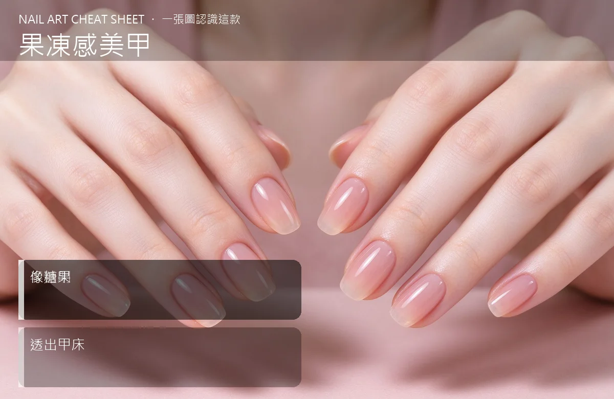

美甲果凍感美甲是什麼？入門入門攻略
果凍感美甲是半透明、像糖果那樣透著指色的嫩色，春夏戴最對味。
果凍感美甲原理與辨識重點：美甲師不說的半透明
果凍感用的是『透感色膠』，它不像一般色膠把指甲蓋得密不透風，而是薄薄一層，讓下面甲床的粉紅色透出來一點點。遠看像是指甲本身長出蜜桃、葡萄、水那樣的嫩色，近看又有糖果的光澤。因為它透，所以可以一層層堆，堆越厚顏色越深，新手也不容易翻車。
誰適合做果凍感美甲？春夏款對號入座
皮膚偏黃、想要顯白又怕厚重的女生最適合；夏天穿無袖、棉麻襯衫、淺色洋裝時戴上，整個人看起來涼涼的。男妝、素顏上班也壓得住，不會太搶。
果凍感美甲美甲施作步驟：透感果凍色膠
前置做好 → 薄上底膠照燈 → 果凍色薄塗第一層照燈 → 想要深一點就再上第二、第三層（每層都要薄）→ 亮面封層。想玩漸層就在指尖多疊一層。
果凍感美甲優缺點分析：美甲持久度與傷甲評估
| 優點 | 說明 |
|---|---|
| 透亮顯白、堆多層也不會結塊、膚色襯得乾淨，素顏戴也不突兀。 | 是韓系流派的招牌，入門就能上手 |
| 缺點 | 說明 |
| 遮蓋力差，若指甲天生有泛黃或縱紋會透出來；持久度跟一般凝膠一樣，但指尖磨損後透感會變花。 | 前置與一次塗太厚是大忌——果凍膠太厚會變霧、不透亮，糖果感就不見了。記得薄塗多層，顏色自然就出來。沒顧好會打折 |

果凍感美甲新手雷區：像糖果與常見錯誤
注意：一次塗太厚是大忌——果凍膠太厚會變霧、不透亮，糖果感就不見了。記得薄塗多層，顏色自然就出來。
果凍感美甲和其他美甲做法的差別比較
常跟『透感漸層』搞混，其實漸層強調的是顏色由深到淺的過渡，果凍感強調的是『整體半透明』的那層透。
果凍感美甲美甲常見問題 FAQ
Q：果凍色會不會很容易看出指甲長出來？ A：透感本來就會透出甲床，新長出來的真甲也會是自然的粉紅，反而不像那種不透明色這麼明顯有一條線。
Q：黑色、深紅也有果凍感嗎？ A：有，但深色果凍感偏紫或偏酒紅，跟淺色比起來透度低，比較像『玻璃珠』而不是『糖果』。
Q：黃皮適合什麼色？ A：挑蜜桃、葡萄、草莓牛奶這類偏粉的果凍色，比冷調的寶藍、湖水藍更襯膚色。